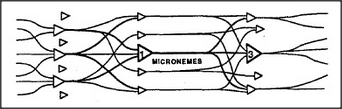

Let's redraw our connection line-scheme in the form of three layers of agents.

The transmitting-agents can simply be K-lines or memorizers, since each of them sends signals to a variety of other agents. The receiving-agents can be simple recognizers, since each of them is aroused only by certain combinations of connector-agents. However, because a typical agent must both arouse other agents and be aroused by other agents, it must tend to branch both at its inputs and at its outputs. So our network can be drawn to look like this:
When we represent the agents this way, we see that they can all be simple evidence-weighing agents, only with different threshold values. Each recognizer could start out with connections to many connector-agents and then, somehow, learn to recognize certain signals by altering its connection weights. Would it be practical to build learning machines according to such a simple scheme? That was the dream of several scientists in the 1950s, but none of their experiments worked well enough to stimulate further work. Recently, a new type of network machine has shown more promise: the so-called Boltzmann machine resembles a Perceptron in having an automatic procedure for learning new connection weights, but it also has some ability to resolve ambiguities by using a variety of ring-closing process. The next few years should tell us more about such machines. Perhaps they could provide a basis for memory- systems that work very much the way K-lines do, to reproduce old partial states of mind.
In designing these clever ways to reduce the numbers of connecting wires, most researchers have proposed wiring the connections at random, so that no signal on any particular wire has any significance by itself but represents only a fragment of each of many unrelated activities. This has the mathematical advantage of producing very few accidental interactions. However, this seems to me a bad idea: it would make it very hard for a transmitting-agency to learn how to exploit a receiving-agency's abilities. I suspect that when we understand the brain, we'll discover that small groups of connection lines do indeed have local significance — because they will turn out to be the most important agents of nearby levels. The connection lines themselves will constitute our micronemes!